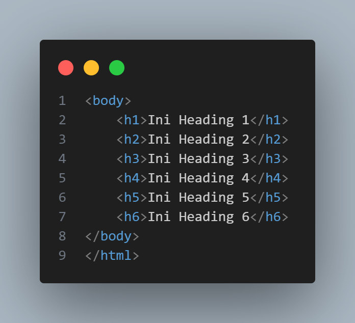
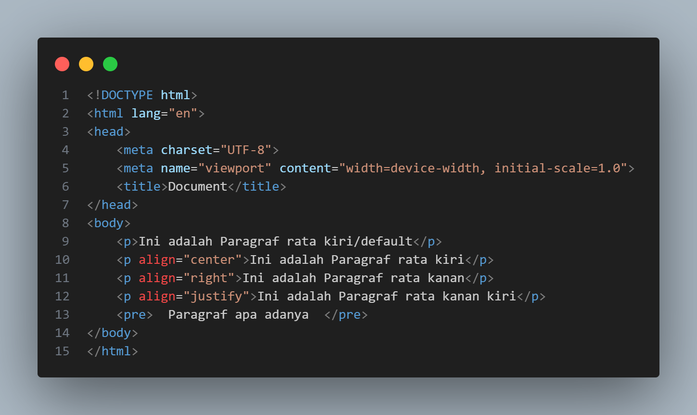

1. Heading (h)

.png)
- Heading adalah sebuah elemen yang biasa digunakan untuk membuat judul pada halaman web.
- Tag yang biasa digunakan adalah (Hn) dengan nilai n antara 1 sampai dengan 6
- Semakin besar nilai n pada Heading maka semakin kecil juga huruf yang tercetak/ditampilkan
- Penulisan default pada Heading adalah rata kiri
- Jika kita ingin membuat heading rata tengah maka tambahkan atribut (align) dengan nilai “center” atau “right” untuk rata kanan.
2. Paragraf (p)

.png)
- Untuk membuat paragraph pada halaman web gunakan tag (p)….(/p).
- Kita juga dapat mengatur paragraf dengan menambahkan atribut align di dalam tag (p align=“left”), (p align=“center”), (p align=“right”).
- Jika membuat rata kiri kanan gunakan nilai “justify”. Contoh: (p align=“right”)Paragraf rata kanan(/p)
- Atribut (pre)...(/pre) digunakan untuk menampilkan kalimat/paragraf apa adanya
3. Garis Horizonal (hr)

.png)
Garis Horizontal adalah sebuah garis horizontal yang biasanya digunakan untuk membatasi suatu elemen, baik judul, heading, paragraf, ataupun yang lainnya. Adapun tagname yang digunakan adalah (hr)
4. Baris Baru (br)
Baris baru biasanya digunakan ketika kita ingin melompat dari baris satu ke baris lainnya. Adapun tagname yang digunakan adalah (br)